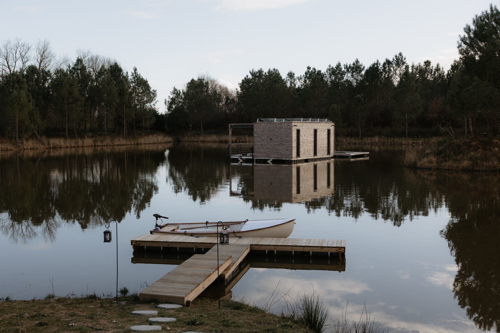
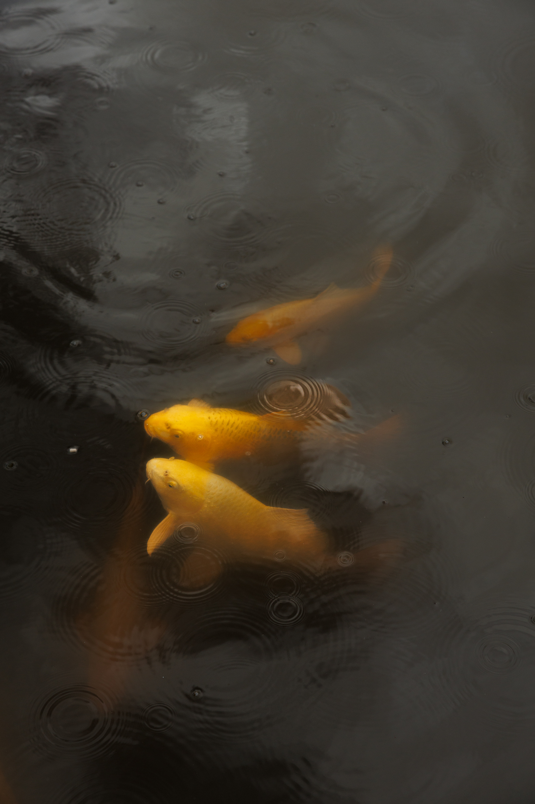
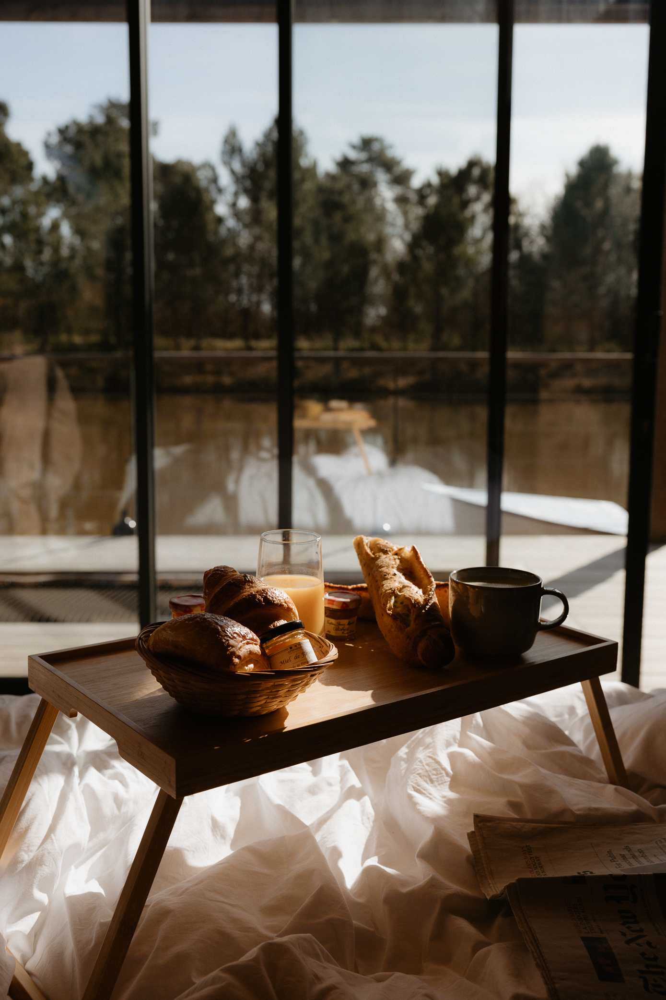
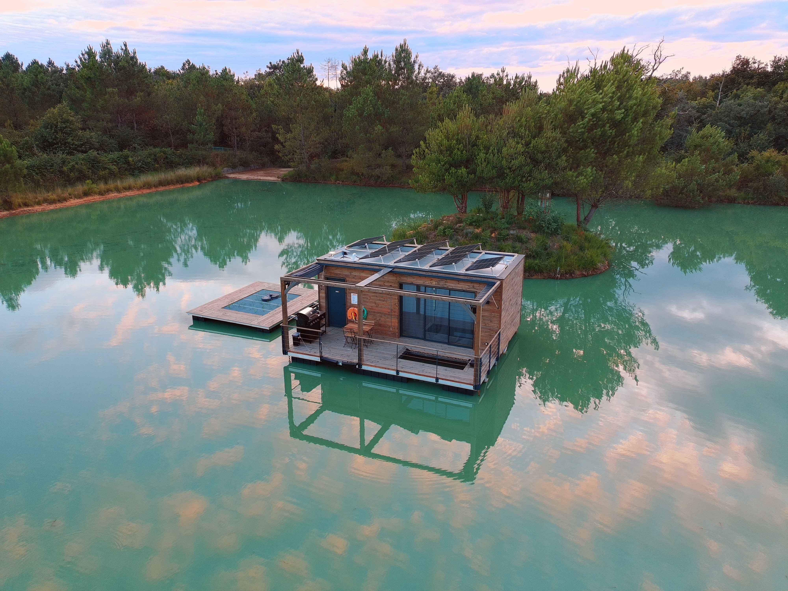
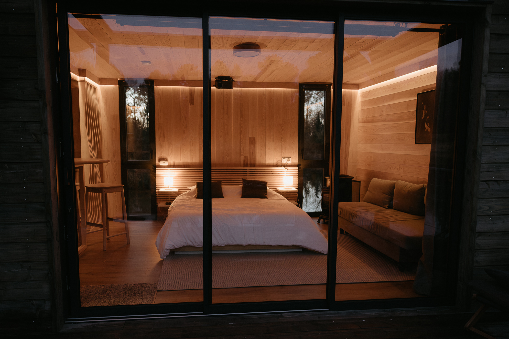

Un lodge écologique
Énergie solaire, eau sanitaire filtrée et phytoépuration : un hébergement autonome conçu pour limiter son empreinte sur l’étang.
Une cabane flottante, autonome et au cœur du vivant.
Découvrir l’expérienceAu cœur d'un étang privé entouré de forêt, découvrez une cabane flottante pensée pour ralentir. Ici, l'eau, la lumière et les sons de la nature donnent le rythme.
Un refuge intimiste où le confort rencontre une autre manière de voyager, plus simple et plus proche de l'essentiel.

Énergie solaire, eau sanitaire filtrée et phytoépuration : un hébergement autonome conçu pour limiter son empreinte sur l’étang.
Rejoignez votre cabane par l’eau, à votre rythme, grâce à une arrivée autonome accompagnée d’instructions pratiques.
Un lodge chauffé en hiver et équipé d’une solution de rafraîchissement pour les journées chaudes d’été.

Observez les carpes koï qui évoluent sous la surface, au milieu d’une biodiversité préservée. Une expérience de contemplation, au fil de l’eau.

Commencez la journée avec une sélection de produits locaux, livrée pour votre séjour.

Une planche à partager, à savourer sur la terrasse au rythme de l’étang.
Prestations additionnelles sur demande, selon disponibilité et tarifs en vigueur.


De vrais moments photographiés à GET OUT THERE.
Le calendrier des disponibilités et les tarifs seront bientôt consultables ici. En attendant, cette première version vous permet de découvrir le lieu.
Aucune réservation ni paiement n'est encore possible sur ce site.